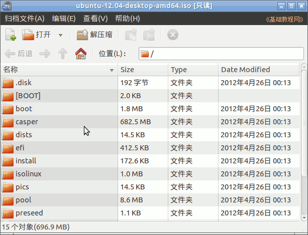
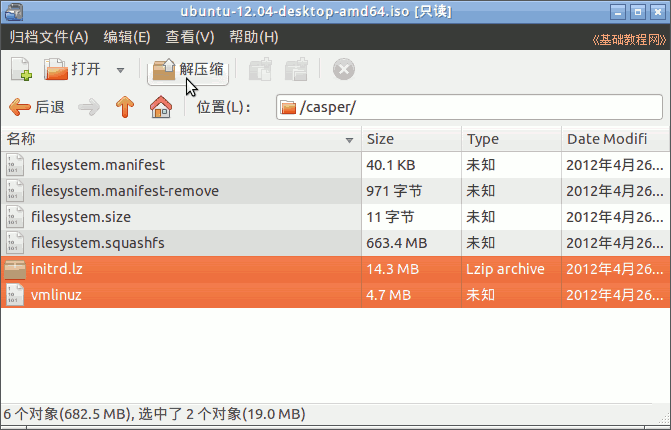
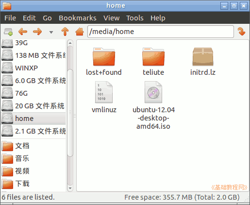
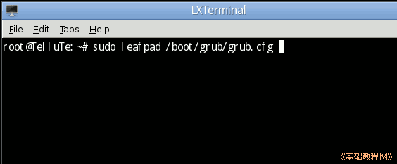
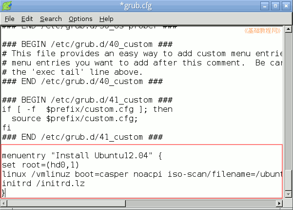
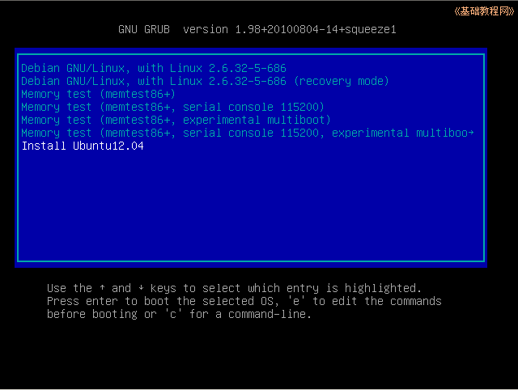

Ubuntu安装基础教程
作者：TeliuTe 来源：基础教程网
Ubuntu 硬盘安装 Ubuntu 返回目录 下一课1、复制引导文件
1）下载 Ubuntu 的 desktop 光盘镜像iso文件，如 ubuntu-12.04-desktop-i386.iso：http://mirrors.sohu.com/ubuntu-releases/12.04/
其他下载地址：
http://mirrors.163.com/ubuntu-releases/
http://mirrors.sohu.com/ubuntu-releases/
http://cn.archive.ubuntu.com/ubuntu-releases/
http://ubuntu.srt.cn/ubuntu-releases/
http://tw.archive.ubuntu.com/ubuntu-releases/
http://mirror.switch.ch/ftp/ubuntu-cdimage/
http://ftp.heanet.ie/mirrors/ubuntu-cdimage/
http://ftp.kddlabs.co.jp/020/Linux/packages/ubuntu/releases-cd/
教育网用户：http://ftp.sjtu.edu.cn/ubuntu-cd/
2）双击下载的ISO镜像文件，用归档管理器打开它；

3）在窗口中找到上面的casper文件夹，双击打开这个文件夹，里面有一个in打头和vm打头的文件，

把这两个initrd.lz和vmlinuz解压出来，放到第一个分区中，把下载的ISO文件也放在里面；

2、修改grub.cfg文件
1）打开终端，输入命令 sudo gedit /boot/grub/grub.cfg 打开文本编辑器；

2）在文档的最后，添加一个启动项，iso文件名要改成跟下载相同的，分区位置也改成相应的；

3）保存好文件，检查一下在第一分区中有3个复制过来的文件，仔细检查一下；
4）重新启动计算机，在出现启动菜单时，按方向键选择“Install Ubuntu12.04”，按回车键进入后开始安装，参阅：http://teliute.org/linux/Ubsetup/lesson21/lesson21.html；

本节学习了在 Ubuntu 中硬盘安装 Ubuntu 的基本方法，如果你成功地完成了练习，请继续学习下一课内容；
本教程由86团学校TeliuTe制作|著作权所有
基础教程网：http://teliute.org/
美丽的校园……
转载和引用本站内容，请保留版权信息和本站链接。